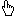
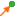
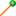

icon to swith to the 'add' mode to manually create nodes and transactions.
icon to swith to the 'add' mode to manually create nodes and transactions.Refer to link Add Mouse Actions for more information regarding this capability.
Select  icon to swith to the 'selection' mode
This mode allows the user to select elements in the graph and perform the following graphical operations zoom in/out, pan, rotate.
Refer to link Selection Mouse Actions for more information regarding this capability.
Select icon to swith to the 'add' mode to manually create nodes and transactions.
Refer to link Add Mouse Actions for more information regarding this capability.
By default, directed transactions are generated by the application.
Select  icon to indicate that the next new transaction is to be directed.
Select  icon to indicate that the next new transaction is to be undirected.